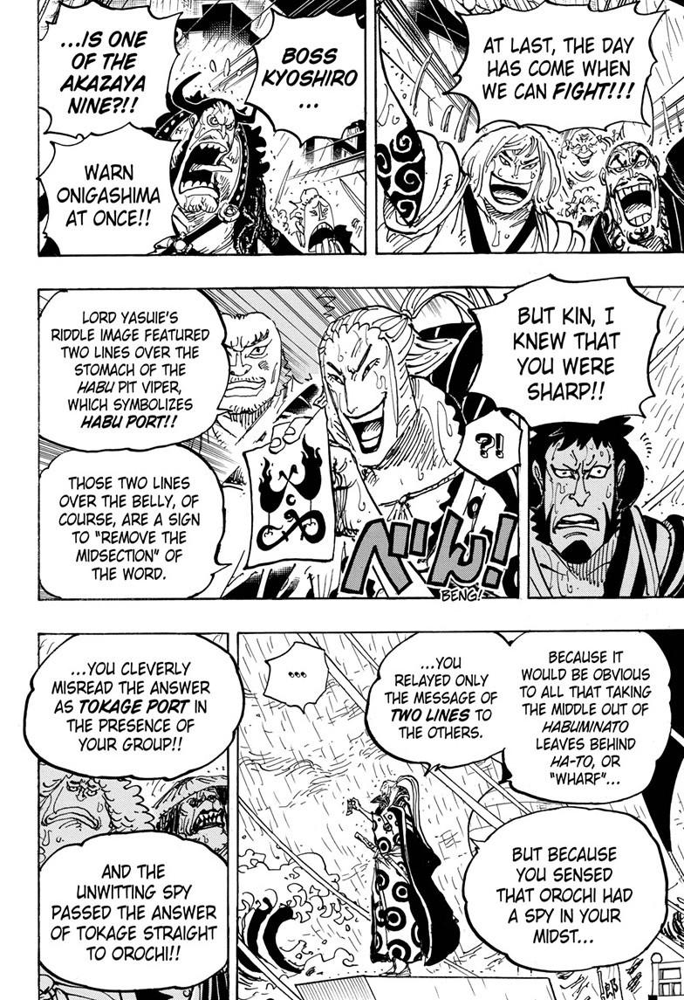

Volume 97
Chapter 975
The Straw Hats and the other supernovas enter the battlefield. While Kanjuro attacks Shinobu and takes Momonosuke hostage.
While the supernovas continue to destroy the battleships, Kyoshiro makes an entrance with his crew. In a change of events it turns out that
Kyoshiro is really one of the Red Scabbards Denjiro. Then he also reveals that Kinemon had planned in advance for a traitor and had taken measurements beforehand.
So all of the Samurai are safe and also Denjiro's crew of 200 men and 1000 freed samurai join the fight.

Chapter 976
Seeing that Kyoshiro is Denjiro, Kanjuro runs away with Monosuke and so does the Beast Pirates but later the pirates start to use long range cannons.
Then to everyones surprise Jimbei makes a grandiose entrance blowing up a warship.
Chapter 977: We'll save the banquet for later!
As the Straw Hats rejoice over Jimbei's return, the samurai's device a battle plan for infiltrating Onigashima.